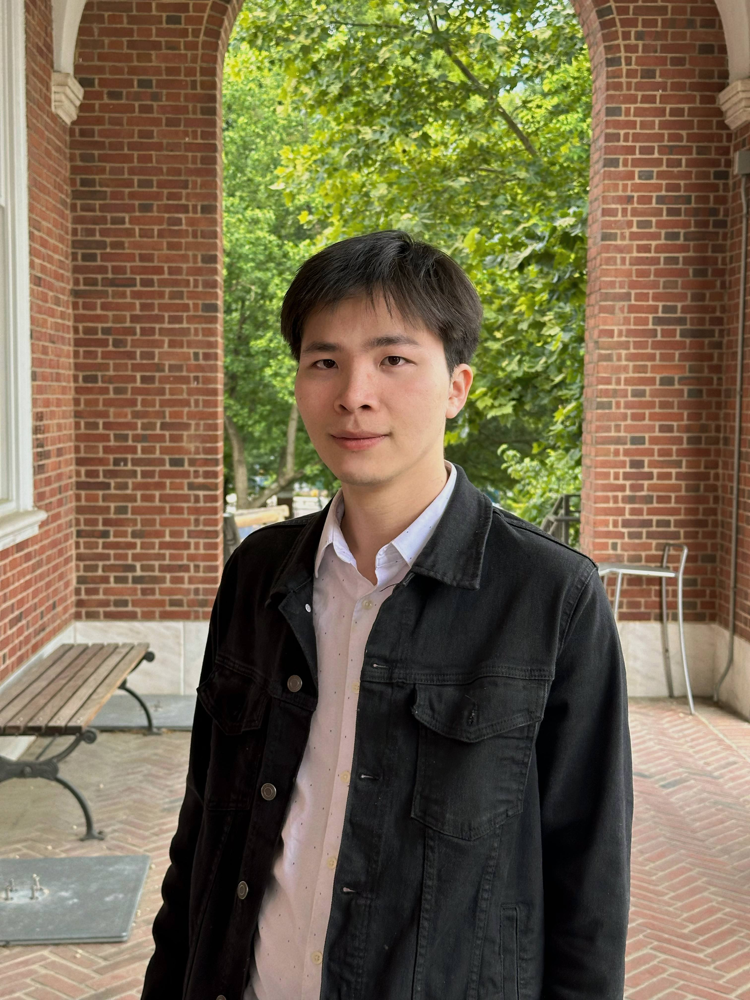
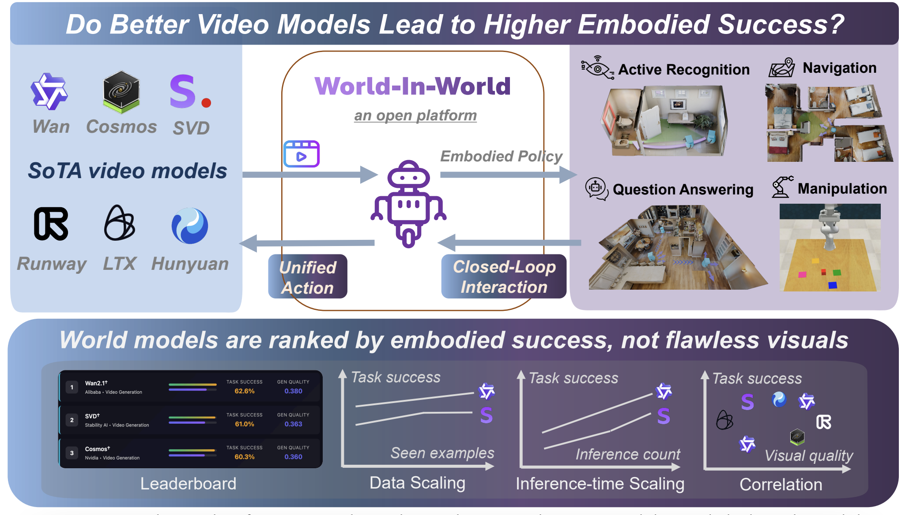
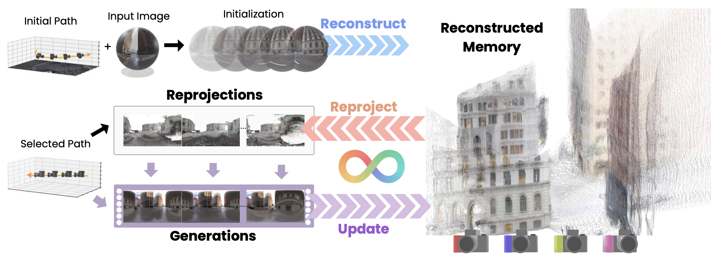
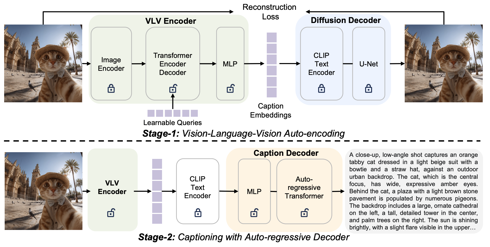
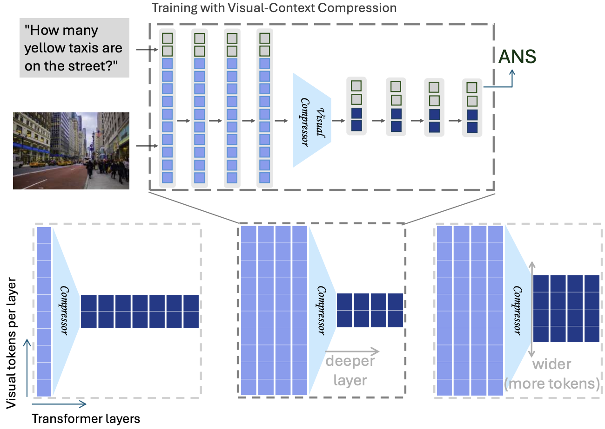
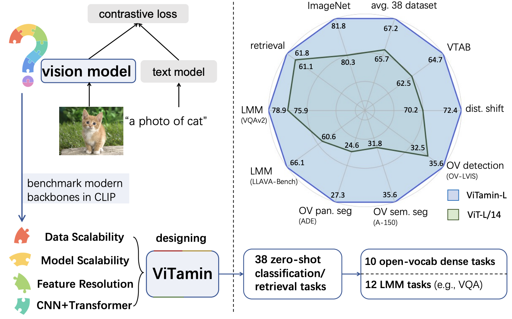
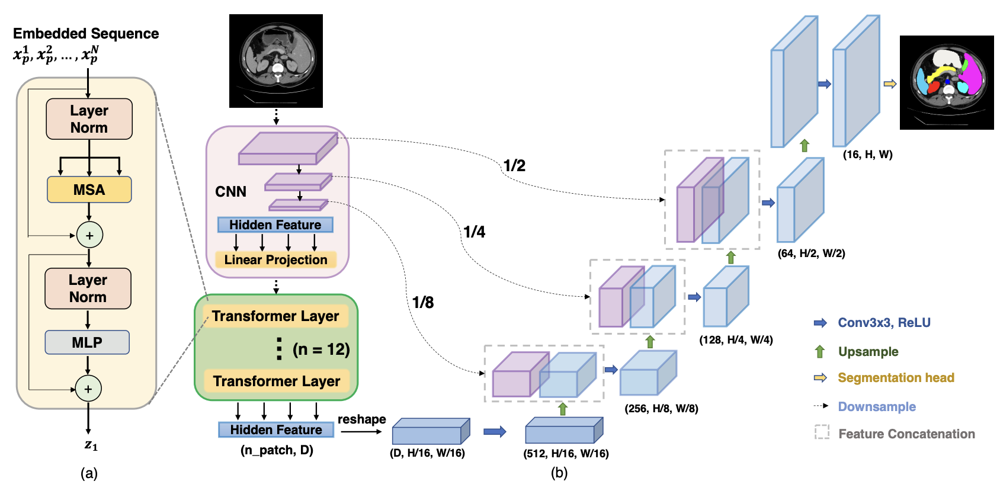

|
Email: jchen293 [at] jh.edu I'm a final-year Ph.D. candidate in Computer Science at Johns Hopkins University, advised by Distinguished Professor Alan Yuille. I am also named a Siebel Scholar, the highest distinction in bioengineering at Hopkins. I am best known for my neural architecture TransUNet, which introduced Transformers into biomedical image analysis for the first time and has since catalyzed a large research community, inspiring over 10,000 subsequent papers. I am fascinated by how intelligence can operate in the real world. My research builds scalable, structured world models that connect artificial and natural intelligence, enabling new forms of reasoning and interaction across computer vision, robotics, and healthcare.I love mentoring and teaching undergraduates. I am appointed as an Instructor to teach Machine Imagination (EN.601.208) at Johns Hopkins in 2025/2026. Email / CV / Google Scholar / Github / Linkedin |
 |
{kind=link}
|
|
- Siebel scholar award, class 2025 ($35k independent award).
- MICCAI 2025 doctoral thesis award.
- MICCAI 2025 best paper award (runner-up; 2 out of 1,027 accepted papers).
- KDD 2025 CCC best paper award.
 NVIDIA 2025 academic grant award ($100k award in compute).
NVIDIA 2025 academic grant award ($100k award in compute).
- 3 NSF travel awards for CVPR/WACV/FG doctoral consortium (outstanding PhD students).
- 2025 visionary award, LLM for material science.
- RSNA 2025 certificate of merit award.
- DAAD AInet fellowship.
- Kempner fellowship ($300k independent research fellowship).
|
|
- My mentee's paper has been selected for an Oral Presentation at ICLR 2026 (top 4% of accepted papers or 1% of submissions). Congrats, Jiahan!
- Undergraduate mentee was a finalist (1 of 24 nationwide) for the CRA Outstanding Undergraduate Researcher Award. Congrats, TaiMing!
- Undergraduate mentee received an Honorable Mention for the Outstanding Undergraduate Researcher Award. Congrats, Arda!
- Undergraduate mentee won Michael J. Muuss Research Award. Congrats, TaiMing!
|
|
Over the next decade, my research aims to answer a central question: how can we bring intelligence into the real world to meaningfully benefit humanity?
This pursuit is structured across three pillars:
- Building Foundation Neural Architectures to learn scalable representations from raw sensory data.
- Establishing Predictive Visual Modeling grounded in human-like mental models to achieve closed-loop embodiment.
- Developing Proactive Biomedical Systems via medical world models to reduce cancer mortality and enhance human life.
(GenEx, ICLR'25, JHU news)
▸ 4D analysis-by-synthsis
(4D-Animal, WACV'26)
▸ 3D/4D spatial reasoning
(SpatialLLM, CVPR'25 highlight)
(World-in-World, ICLR'26)
(CancerUnit, ICCV'23)
▸ Scaling cancer AI with reports
(R-Super, MICCAI'25)
- TransUNet is listed as top 15 cited 2021 paper in all AI fields (the top 1 alphafold has won the nobel prize).
- SwinUNet is listed as top 3 most cited ECCV papers in five years in Google Metrics.
- TransFG listed among top 3 most influential AAAI papers.
- ViTamin achieved state-of-the-art on 60+ multimodal benchmarks in 2024, and was adopted into the widely used timm (36k stars) and openclip codebase (13k stars).
|
|
|

|
ICLR, 2026. Oral presentation (4% of accepted papers). World models live and die by their closed-loop success, not flawless generated visuals. Paper | OpenReview | Project | Leaderboard | Interactive Demo | Code |
|
|
Shanshan Zhong ☆, Jiawei Peng, Zehan Zheng, Zhongzhan Huang, Wufei Ma, Guofeng Zhang, Qihao Liu, Alan Yuille, Jieneng Chen WACV, 2026. Paper | Code |
|
|
ICLR, 2025. Turn a single image into a 3D world adventure. Embodied agents refine their beliefs by predicting unseen parts of the physical world. JHU News | Paper (OpenReview) | Blog | Project Website |
|
|
ICCV, 2025. Envision precision medicine via generative world modeling. Paper | Code | Project |

|
Technical report, 2025. Bridge generative world models with 3D vision. Paper | Code |
|

|
Tiezheng Zhang, Yitong Li, Yu-Cheng Chou, Jieneng Chen, Alan Yuille, Chen Wei, Junfei Xiao. NeurIPS, 2025. Paper | Project | Code | HuggingFace Data Card |
|
|
Xingrui Wang, Wufei Ma, Tiezheng Zhang, Celso Miguel de Melo, Jieneng Chen†, Alan Yuille†. CVPR, 2025. Highlight presentation Paper camera ready | Code | HuggingFace Data Card |
|
|
Wufei Ma, Luoxin Ye, Nessa McWeeney, Celso Miguel de Melo, Alan Yuille, Jieneng Chen. CVPR, 2025. Highlight presentation Paper camera ready |
|

|
Jieneng Chen, Luoxin Ye, Ju He, Zhaoyang Wang, Daniel Khashabi, Alan Yuille. NeurIPS, 2024. Paper | Code | Project |
|

|
Jieneng Chen, Qihang Yu, Xiaohui Shen, Alan Yuille, Liang-Chieh Chen. CVPR, 2024. The first vision-centric design for LMM encoder, with SoTA performance on 60+ multimodal tasks in 2024. Paper | Code | 🤗 HuggingFace | timm  | open_clip | open_clip 
|
|

|
Jieneng Chen, Jieru Mei, Xianhang Li, Yongyi Lu, Qihang Yu, Qingyue Wei, Xiangde Luo, Yutong Xie, Ehsan Adeli, Yan Wang, Matthew P Lungren, Shaoting Zhang, Lei Xing, Le Lu, Alan Yuille, Yuyin Zhou. Medical Image Analysis (MedIA), 2024. ICML-W 2021 | Journal | Code | 
Most downloaded articles published in ScienceDirect all time. Most cited articles in MedIA. Top 15 cited 2021 paper in all AI fields. |
|
|
- invited talk at NSF IAIFI on physics & AI in Boston.
- invited lab seminar at Stanford.
- invited vision seminar at UIUC.
- invited guest lecture at Rice University.
- invited lab seminars at Harvard/MIT/HMS/MGH/Dana-Farber.
- invited talk at ICLR 2025 Workshop on Embodied Intelligence with LLMs In Open City Environment (slides).
- invited talks at Johns Hopkins, Chemical and Biomolecular Engineering (ChemBE), Cognitive Science Brown Bag, Center for Language and Speech Processing (CLSP), Mathematical Institute for Data Science (MINDS), Artificial Intelligence for Engineering and Medicine Lab (AIEM).
|
|
- Instructor: I designed and taught the undergraduate course Machine Imagination, EN.601.208, at JHU in 2025 and 2026 (starting Jan. 2026).
|
|
- Invited reviewers: CVPR, ICCV, ECCV, WACV, NeurIPS, ICML, ICLR, AAAI, IJCV, TPAMI, TMI, MICCAI and CogSci.
- Workshop co-organizer for ICCV, CVPR and MICCAI.
- JHU CS mentor hours.
- Lecture for JHU WSE Pre-College Program 2025.
|
|
I am fortunate to have collaborated with super talented students at JHU.
-
TaiMing Lu, JHU Undergraduate → Princeton CS PhD
Research: 1 first-author ICLR publication (the Genex project).
Award: Michael J. Muuss Research Award and finalist for the CRA Outstanding Undergraduate Researcher Award. -
Shanshan Zhong (she/her), SYSU MS → CMU LTI PhD
Research: 1 first-author WACV publication (the 4D-Animal project).
|
|
-
My doctoral research was made possible through the generous support of ARL, IARPA, NSF, NIH, ONR, Lambda, NVIDIA, Johns Hopkins University, the Siebel Foundation, the Patrick J. McGovern Foundation, and the Lustgarten Foundation. I am deeply grateful for the resources provided to me and my advisors.